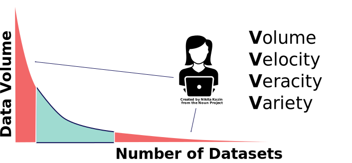
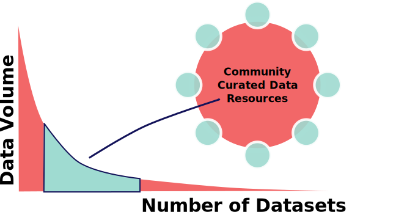
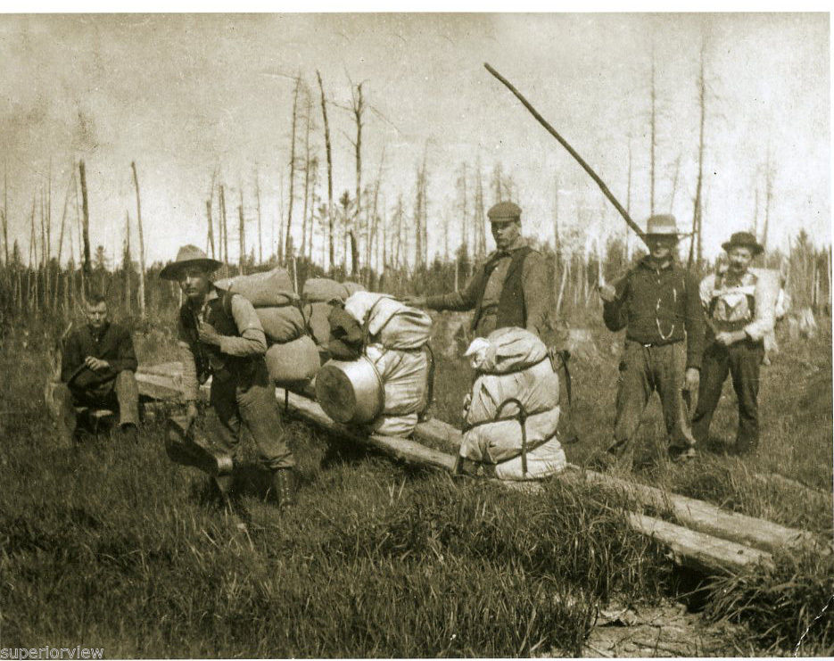

From technical challenges to interdisciplinary success
Understanding interactions between
climate, vegetation and land use change
Simon J. Goring
University of Wisconsin - Madison
UBC IRES Faculty Seminar, September 7, 2017
Acknowledgements
Collaborators
PalEON
Andria Dawson, Jack Williams, Steve Jackson, Jason McLachlan, Chris Paciorek, Mevin Hooten, John Tipton, Jenn MarlonNeotoma
Eric C. Grimm, Russ Graham, Allan Ashworth, Jessica Blois, Mike Stryker, Steve CrawfordEarthCube
Mark Uhen, Amy Myrbo, Nick McKay, Anders Noren, Julian Jenkins, Steve Richard, Kerstin Lehnert, Doug FilsFacets of Complex Problems
Potential for Collaboration
Technical Challenges


Data Challenges
The Pain of Big Data
- More time cleaning data
- Sensitive to analytic methods
- High processing overhead
- Data management issues
Presidential Chair in Information Studies
Professor of Information Studies
Borgman et al 2016. Int. J. Digital Curation
- Methods & tools vary
- Multiple techniques to generate similar datasets
- Individuals responsible for data management
- Data often neglected or lost when no longer needed
Scientific
Challenges
- More complex analysis
(GIS, Bayesian, Data Assimilation) - Highly integrated analysis
- Higher reliance on (presumed) data quality
- Data discovery
Human Challenges
- Costs of interdisciplinary research can be high
- Lack of credit, or perceived credit
- Management of data, individuals and projects
New Techniques, New Opportunities
The Promise of Data
With more data we can do anything

Problem Focused Approaches
Long-term investments in cyberinfrastructure and human capital
are necessary to sustain current research & support future advances.

The Paleoecological Observation Network
PalEON
Causes of Divergence
- Model assumptions
- Driver datasets
- Model components
- Uncertainty
Public Land Surveys
Assumptions
- Are modern forests representative of presettlement communities?
- Are species-climate relationships stable?
- Were pre-settlement forests in a stable state?
Pre-Settlement Forests
Lost Forests & Novelty
Are modern forests representative of pre-settlement communities?
Significant vegetation change since EuroAmerican Settlement
Land Use is Climatically Biased
Are species-climate relationships stable?
Land use change biases modern relationships.
Neotoma Paleoecological Database

Dawson et al. 2016. Quat. Sci. Rev.; Dawson et al. in prep.
Were pre-settlement forests in a stable state?
Forests were changing at centennial scales.
Model Interrogation
- Poor initial PFT-climate fit
- Evergreen taxa no better than random
- Leads to errors in simulated albedo, net primary productivity, and transpiration
Matthes et al., 2016. J Geophys Res.
Neotoma Paleoecological
Database
Support for Science
Combining Human & Technical Solutions
neotoma: R package for paleoecology
Domain Expertise & Computational Skill
Goring et al. 2015. Open Quaternary.
Surprises in Legacy Data
Problems Need New Solutions